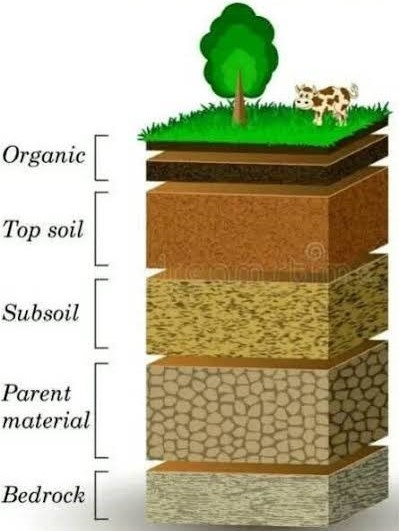

FARMER SUPPORT
💬 WhatsApp விவசாய ஆலோசனை
நாங்கள் விவசாயிகளுக்கு WhatsApp மூலம் விரைவான மற்றும் எளிமையான விவசாய ஆலோசனைகளை வழங்குகிறோம். பயிர்களில் ஏற்படும் பிரச்சினைகளின் புகைப்படம் அல்லது வீடியோவை அனுப்பினால் அவற்றை ஆய்வு செய்து சரியான இயற்கை தீர்வுகளை பரிந்துரைக்கிறோம். சத்து குறைபாடு, பூச்சி தாக்குதல், நோய் அறிகுறிகள் மற்றும் வளர்ச்சி பிரச்சினைகளுக்கு உடனடி வழிகாட்டுதல் வழங்குகிறோம். பயிருக்கு ஏற்ற இயற்கை உரங்களை பயன்படுத்தும் முறையையும் விளக்குகிறோம். தேவையான நேரத்தில் தொடர்ச்சியான தொழில்நுட்ப ஆதரவும் வழங்குகிறோம். விவசாயிகள் எந்த இடத்தில் இருந்தும் எங்களை எளிதாக தொடர்புகொண்டு ஆலோசனை பெறலாம்.
📞 தொலைபேசி ஆலோசனை
நாங்கள் தொலைபேசி மூலம் விவசாயிகளின் அனைத்து விவசாய சந்தேகங்களுக்கும் தெளிவான ஆலோசனைகளை வழங்குகிறோம். பயிரின் வளர்ச்சி நிலை, மண் வளம், சத்து குறைபாடு மற்றும் நோய் தாக்குதல் குறித்து வழிகாட்டுகிறோம். இயற்கை உரங்களை எந்த அளவில் பயன்படுத்த வேண்டும் என்பதையும் விளக்குகிறோம். பூச்சி மற்றும் நோய் மேலாண்மைக்கான சரியான தீர்வுகளை பரிந்துரைக்கிறோம். அவசரமான விவசாய பிரச்சினைகளுக்கு உடனடி ஆலோசனை வழங்குகிறோம். விவசாயிகளுக்கு தொடர்ந்து தொழில்நுட்ப ஆதரவை வழங்குவது எங்கள் நோக்கமாகும்.
🚜 Field Follow-up Support
நாங்கள் களப்பார்வைக்குப் பிறகும் விவசாய நிலத்தின் வளர்ச்சியை தொடர்ந்து கண்காணிக்கிறோம். பயிரில் ஏற்பட்ட மாற்றங்கள் மற்றும் வளர்ச்சி முன்னேற்றத்தை ஆய்வு செய்கிறோம். தேவையான இடங்களில் உர பயன்பாடு மற்றும் பராமரிப்பு முறைகளை மாற்றி பரிந்துரைக்கிறோம். பூச்சி மற்றும் நோய் தாக்குதல்கள் மீண்டும் ஏற்படாமல் தடுக்கும் ஆலோசனைகளை வழங்குகிறோம். பயிரின் ஒவ்வொரு வளர்ச்சி நிலையிலும் தேவையான தொழில்நுட்ப ஆதரவை வழங்குகிறோம். விவசாயிகளுடன் தொடர்ந்து தொடர்பில் இருந்து முழுமையான உதவியை வழங்குகிறோம்.

🧪 மண் அறிக்கை விளக்கம்
நாங்கள் மண் ஆய்வின் அறிக்கையை விவசாயிகளுக்கு எளிதாக புரியும் வகையில் விளக்குகிறோம். மண்ணில் உள்ள NPK சத்துகள், pH அளவு, கரிமப்பொருள் மற்றும் நுண்ணூட்டச்சத்துகளின் நிலையை தெளிவாக கூறுகிறோம். எந்த சத்து குறைவாக உள்ளது என்பதையும் அதன் தாக்கத்தையும் விளக்குகிறோம். மண்ணின் தன்மைக்கு ஏற்ப சரியான இயற்கை உரங்களை பரிந்துரைக்கிறோம். மண் வளத்தை மேம்படுத்த தேவையான பராமரிப்பு முறைகளையும் கூறுகிறோம். அதிக மகசூல் பெற மண் அறிக்கையை அடிப்படையாகக் கொண்டு உர திட்டத்தை வழங்குகிறோம்.

🌿 உர பயன்பாட்டு வழிகாட்டுதல்
நாங்கள் இயற்கை உரங்களை சரியான முறையில் பயன்படுத்த முழுமையான வழிகாட்டுதலை வழங்குகிறோம். எந்த பயிருக்கு எந்த உரத்தை பயன்படுத்த வேண்டும் என்பதை விளக்குகிறோம். உரத்தின் அளவு, பயன்படுத்தும் நேரம் மற்றும் பயன்பாட்டு முறையை தெளிவாக கூறுகிறோம். Royal Gel, Humic Power, Banana Gold, Coconut Energy, Speed Nutrient போன்ற தயாரிப்புகளை சரியான முறையில் பயன்படுத்த வழிகாட்டுகிறோம். நீர் மேலாண்மையுடன் உரங்களை இணைத்து பயன்படுத்தும் முறைகளையும் விளக்குகிறோம். மண் வளத்தை பாதுகாத்து பயிர்களின் வளர்ச்சியை அதிகரிக்கும் இயற்கை உர திட்டத்தையும் வழங்குகிறோம்.
🌱 பருவகால பயிர் ஆலோசனை
நாங்கள் ஒவ்வொரு பருவத்திற்கும் ஏற்ற பயிர் ஆலோசனைகளை வழங்குகிறோம். கோடை, மழைக்காலம் மற்றும் குளிர்காலத்திற்கு ஏற்ற பயிர் பராமரிப்பு முறைகளை விளக்குகிறோம். பருவநிலைக்கு ஏற்ப நீர் மேலாண்மை மற்றும் உர பயன்பாட்டு திட்டத்தை வழங்குகிறோம். காலநிலை மாற்றத்தால் ஏற்படும் பாதிப்புகளை குறைக்கும் இயற்கை தீர்வுகளை பரிந்துரைக்கிறோம். பருவத்திற்கு ஏற்ற பூச்சி மற்றும் நோய் மேலாண்மை ஆலோசனைகளையும் வழங்குகிறோம். சரியான நேரத்தில் சரியான பராமரிப்பை மேற்கொண்டு அதிக மகசூல் மற்றும் தரமான விளைச்சல் பெற விவசாயிகளுக்கு முழுமையான வழிகாட்டுதலை வழங்குகிறோம்.